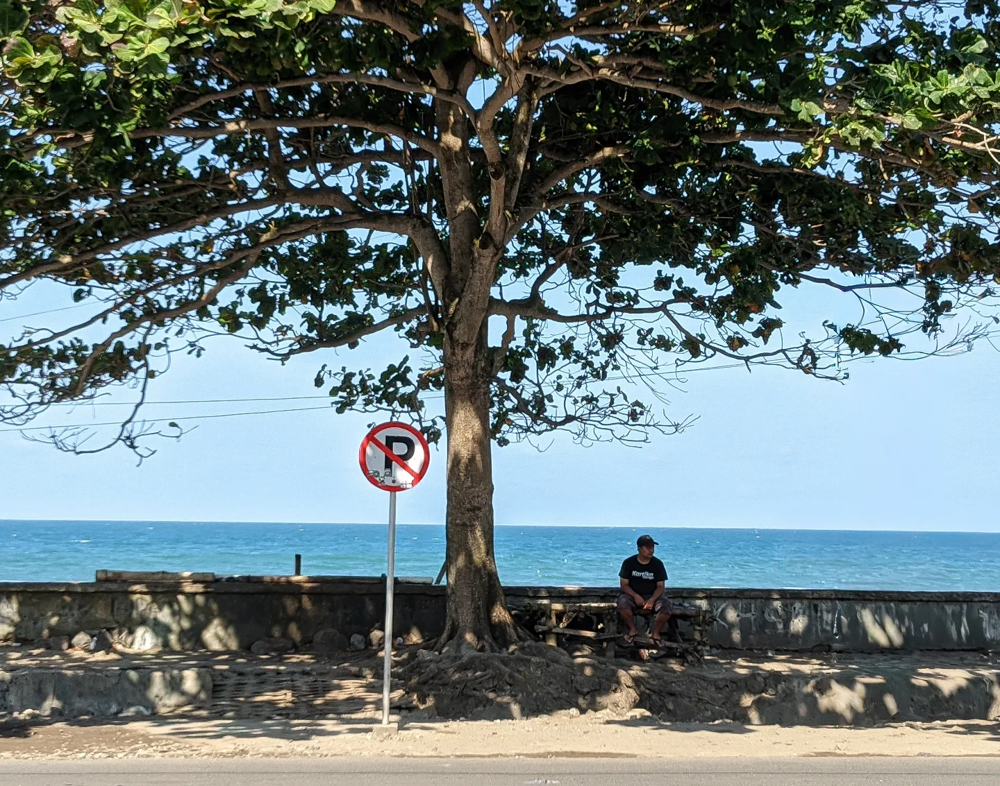
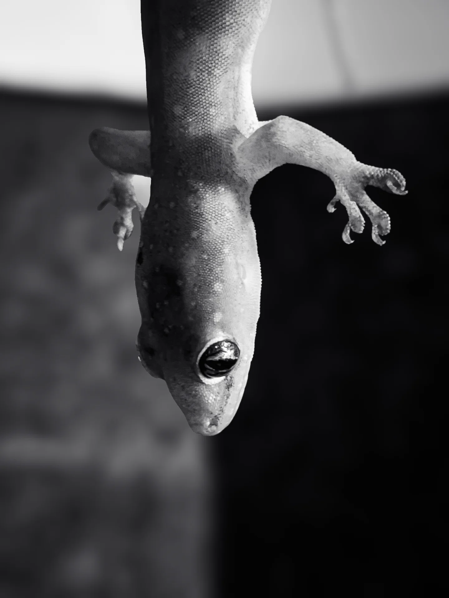

Photography — For Fun
Lvens is a study in light,
held still.
A hobbyist eye, one year in. Shot on phone, still learning as I go.
SCROLL
Work
01 — 141 · Shot on phoneIMAGES/ABOUT.JPG

About
Been shooting for about a year now, just on my phone, purely as a hobby.
Still improving — next up is getting an actual camera and working on my editing, both need work. Short term I want to travel more and shoot in Europe, Australia, and New Zealand.
1Year shooting
141Photos shared
∞Still learning
Say Hi
xovriet@gmail.comJust a hobbyist sharing the journey — feel free to reach out or follow along.